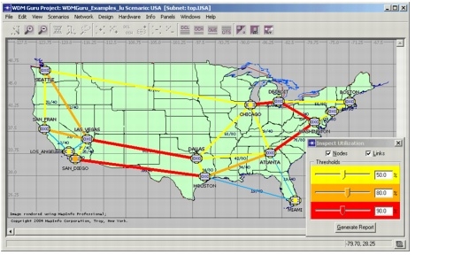

Viewing Network Information > Viewing Node and Link Utilizations
Viewing Node and Link Utilizations
You can visualize node and link utilizations using the Utilization Viewer (Info > Inspect Utilization). You can specify three levels of utilization. The links and nodes are colored according to the specified levels. Yellow, Orange, and Red are used to indicate links and nodes reaching saturation level 1, 2, or 3. Click the DCL/ OCH/ OMS/ OTS toolbar buttons to switch to the layer you want to view.
Figure 15-2 Viewing Link and Node Utilizations

When you click Generate Report, an HTML report appears and shows the link utilizations at the different layers. This report includes the following:
| Home © 1987-2007 OPNET Technologies, Inc. All Rights Reserved. This software may be covered by one or more U.S. Patents. See complete patent notice in the Legal Notices section. OPNET Support Center |